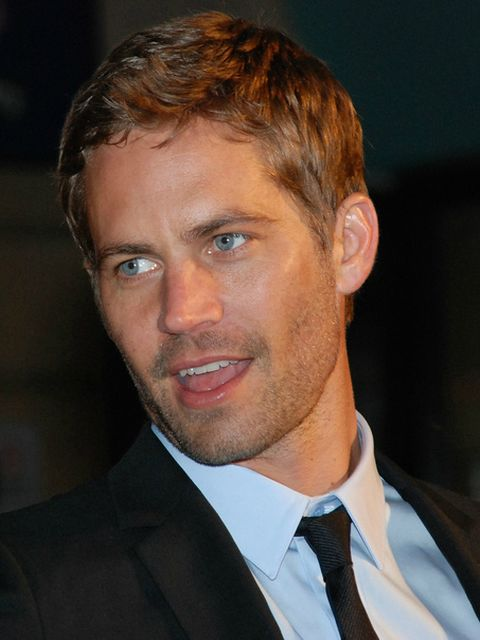
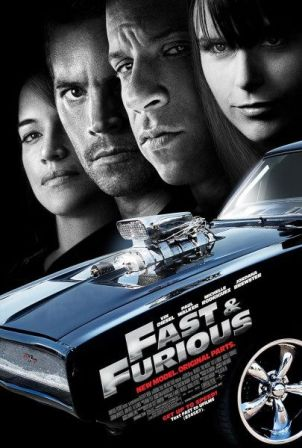

Domenic Toretto é o líder de uma gangue de corridas de ruas em Los Angeles que está sendo investigado pela polícia por roubo de equipamentos eletrônicos. Para investigá-lo é enviado Brian Spindler, que se infiltra na gangue na intenção de descobrir se Toretto é realmente o autor dos crimes e se há alguém mais por trás deles.

O ex-policial Brian O'Conner se muda de Los Angeles para Miami para recomeçar sua
vida.
Ele acaba se envolvendo em rachas na sua nova cidade com seu amigo Tej e Suki. Suas aventuras
terminam
quando ele é preso e faz um acordo com agentes do FBI.
Brian tem a missão muito perigosa de prender um poderoso chefe do cartel das drogas.
Sean Boswell é um piloto de rua que desafia seu rival e
bate o carro no fim da corrida. Então, Sean decide se
mudar para o Japão em companhia de seu pai para evitar a
prisão nos Estados Unidos, já que os rachas não são nada
populares com as autoridades. Em Tóquio, ele começa a
aprender um excitante e perigoso estilo novo de competir
nas ruas. Só que os riscos ficam ainda mais altos quando
Sean decide competir com o campeão local e acaba se
apaixonando pela namorada dele.


Velozes e furiosos 4
Dominic Toretto descobre que sua amada Letty foi assassinada e resolve procurar pelo autor do crime.
Enquanto isso, o agente Brian O'Conner
está em busca de um traficante de drogas. Eles percebem que talvez procurem a mesma pessoa.
Ordem de lançamento de Velozes e furiosos
- Velozes e furiosos (2001)
- + Velozes + Furiosos (2003)
- Velozes e furiosos 4(2009)
- Velozes e furiosos 5: operação Rio(2011)
- Velozes e furiosos 6 (2013)
- Velozes e furiosos: desafio em Tóquio (2006)
- Velozes e furiosos 7 (2015)
- Velozes e furiosos 8 (2017)
- Hobbs & Shaw(2019)